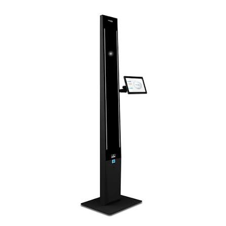
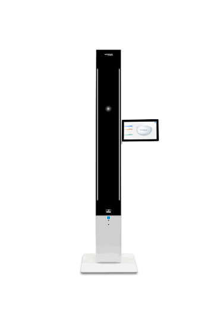
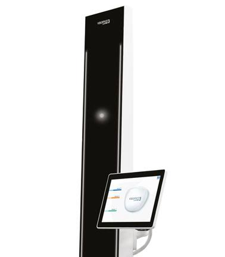
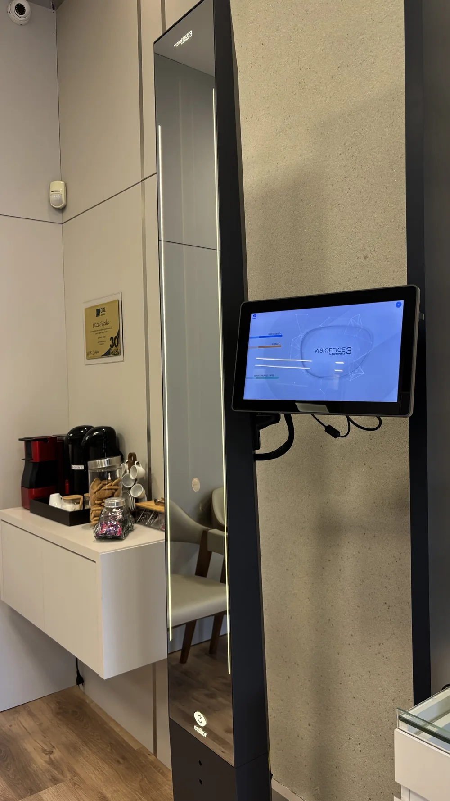

TECNOLOGIA ESSILOR · JOINVILLE
Visioffice 3 na Ótica Pupila
Medição digital para personalizar suas lentes.
Na Pupila, em Joinville, usamos a torre de medição da Essilor com a armação escolhida no rosto. O Visioffice 3 registra a posição dos olhos e da armação para ajudar a definir onde as lentes devem ficar em relação às pupilas.
Como fazemos a medição
O que o Visioffice 3 mede
- Distância entre as pupilas
- Ajuda a posicionar as lentes horizontalmente em relação aos olhos.
- Altura de montagem
- Indica a posição vertical da pupila na armação escolhida.
- Posição da armação
- A distância entre o olho e a lente, a inclinação e a curvatura ajudam a descrever como os óculos ficam no rosto.
Tecnologias que usamos na Pupila
- Eyecode®
- Localiza em três dimensões o centro de rotação de cada olho. Essa medida pode ser usada no cálculo das lentes compatíveis com a tecnologia.
- H3D
- Analisa a postura natural da cabeça ao olhar para longe. A equipe considera essa postura ao medir como a armação se posiciona no rosto.
- Comportamento visual de perto
- Avalia como você usa a visão de perto em uma tarefa como a leitura. O protocolo ajuda a personalizar modelos compatíveis da linha Varilux® XR.
A equipe aplica as medições conforme sua receita, a armação e o modelo de lente escolhido.


Como funciona na loja
Traga sua receita
A equipe confere a prescrição e conversa com você sobre sua rotina.
Experimente a armação
Com os óculos ajustados, você olha para o equipamento seguindo a orientação da equipe.
Converse sobre as lentes
A equipe confere as medidas e orienta as opções de montagem e lentes compatíveis.
A medição ajuda no ajuste das lentes e complementa a receita do seu oftalmologista.
Conheça as lentes Essilor e Varilux